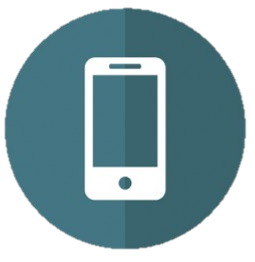

What We Can Do
Spread Awareness
One of the biggest problems regarding e-waste is the lack of public awareness towards the issues, hazards, and recycling of e-waste. Thus, the first thing you can do is to spread the awareness by telling your friends, family and colleagues about the importance of recycling electronic waste. There are tons of documentaries and websites online that will help make the process both exciting and effective!
Trade-In Programs
Many electronic companies (Best Buy, TELUS, Rogers, Staples, Bell, to name a few) nowadays offer trade-in programs. This means that you can trade in your old electronics for store credits, which you can use to purchase new electronics! The stores will then take care of the end-of-life management for the e-waste you traded in. This not only saves money for you, but helps the environment as well.
Donate Your E-Waste
If your e-waste has become very old or broken, trade-in programs may not pay for these consumer electronics. In this case, you could always donate your e-waste to organizations that use them for a better cause. For instance, the Cell Phones for Soldiers program is a nonprofit organization dedicated to providing cost-free communication services to active-duty military members and veterans.
Fully Use your Electronics Before Throwing Them Away
Of course, the easiest way to reduce the amount of e-waste produced is naturally to stop purchasing so many unnecessary electronics. If your iPhone 6 is working perfectly fine after a few months of use, do not rush to purchase the new iPhone 6 Plus. That only creates an unnecessary piece of e-waste (your barely used iPhone 6), harm the environment, AND cause you to lose money!
SSearch for Recycling Programs
To help recycle your e-waste, you could always drop them off at a recycling program where electronics are disposed of according to EPA regulations instead of dumping them in the garbage (E-waste has already been banned from landfills and curbside pickup, so you are kind of forced to recycle them anyway).
Join Project E-Waste
Lastly, other than to simply spread awareness (and practice our website coding skills), Project E-waste is also partnering with The Habitat for Humanity, a non-profit organization that collects e-waste through their Ontario ReStores, which will then be used to build affordable housing in our community. You can find the donate button below, or you can hit the Contact Us page for more information.
© Pew-Pew-Pew | All Rights Reserved
Disclaimer: All images used within this website are found on the internet. We will provide the source or remove the images upon request.